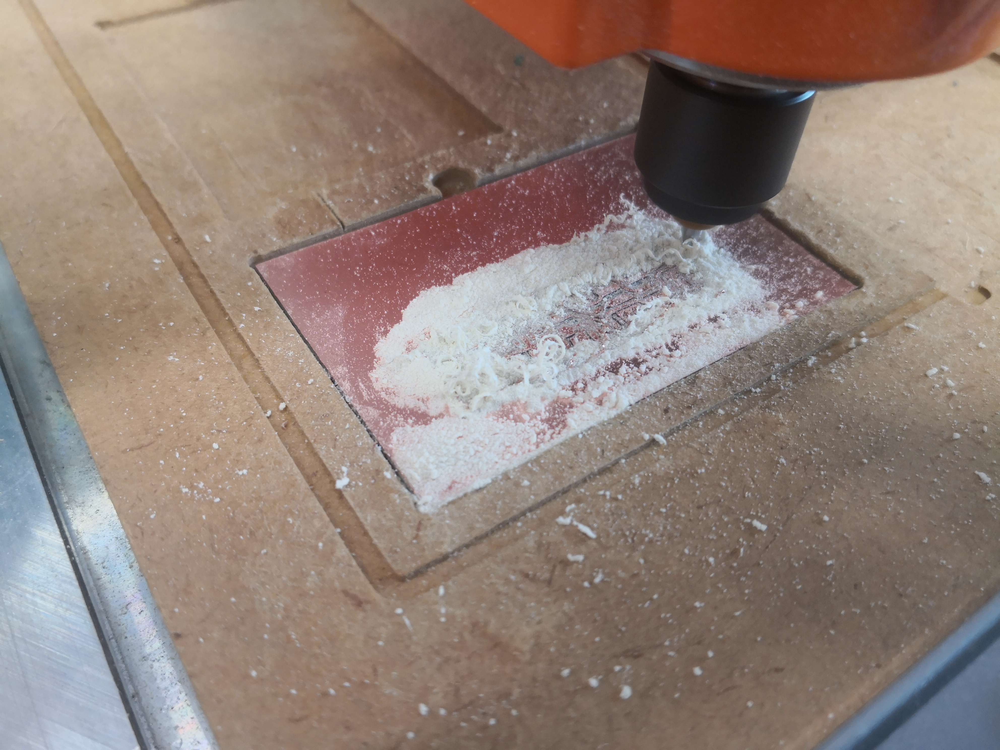
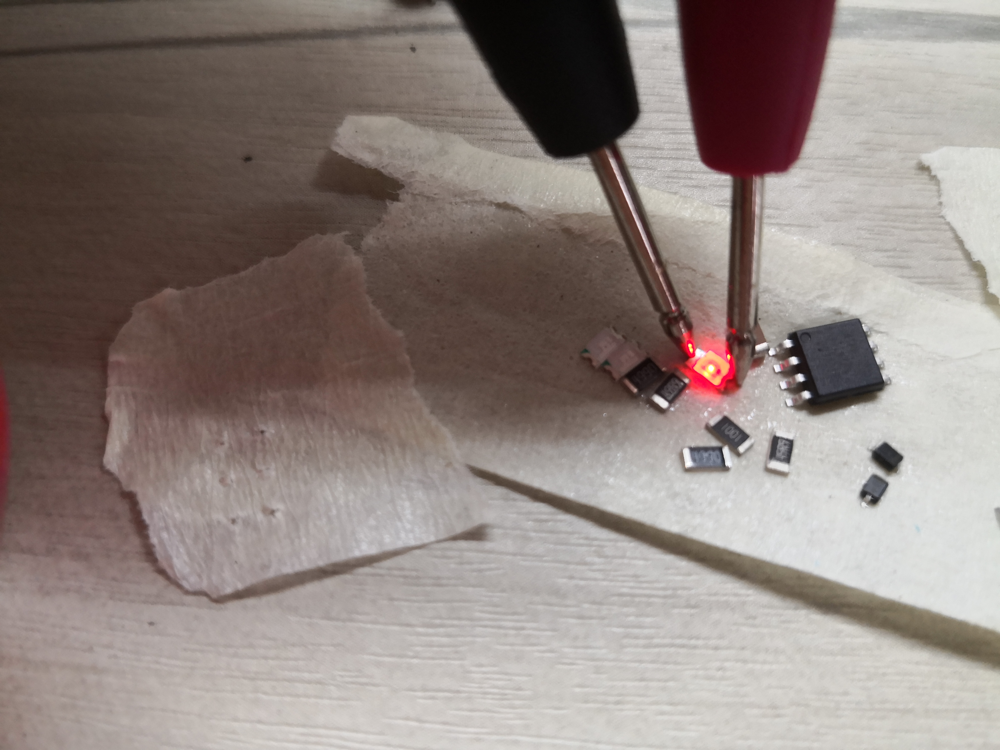
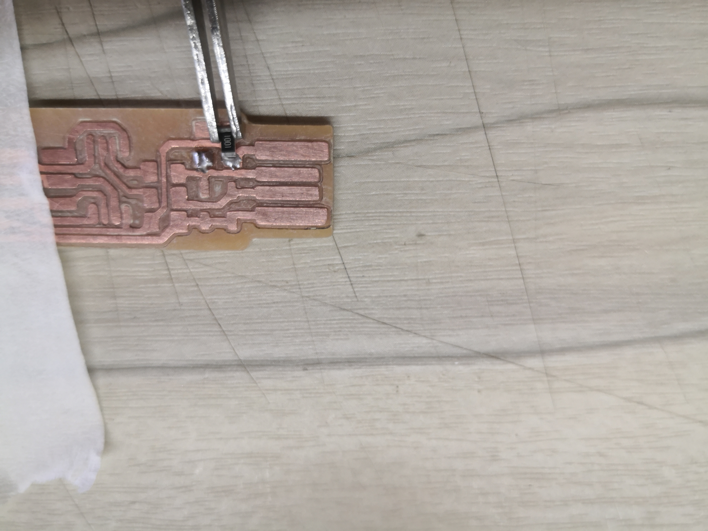
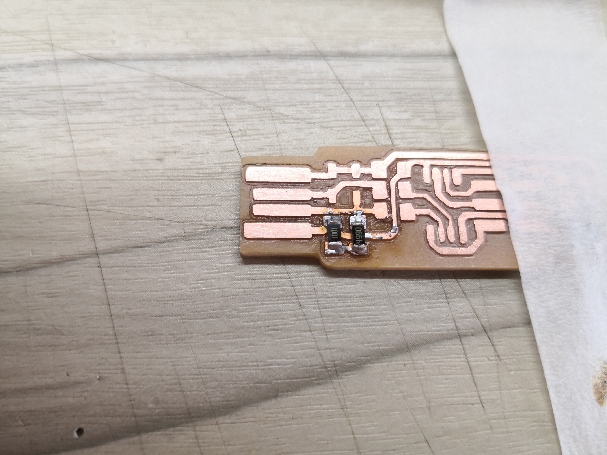
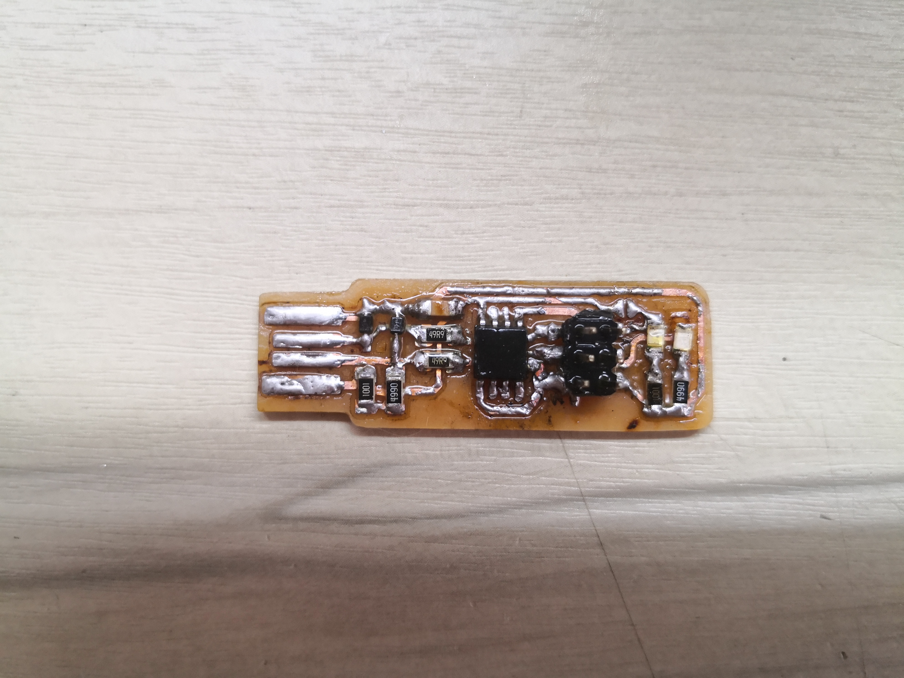
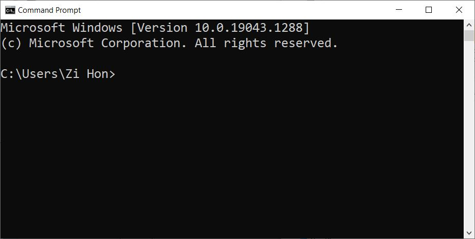
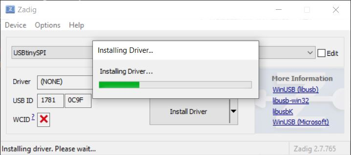
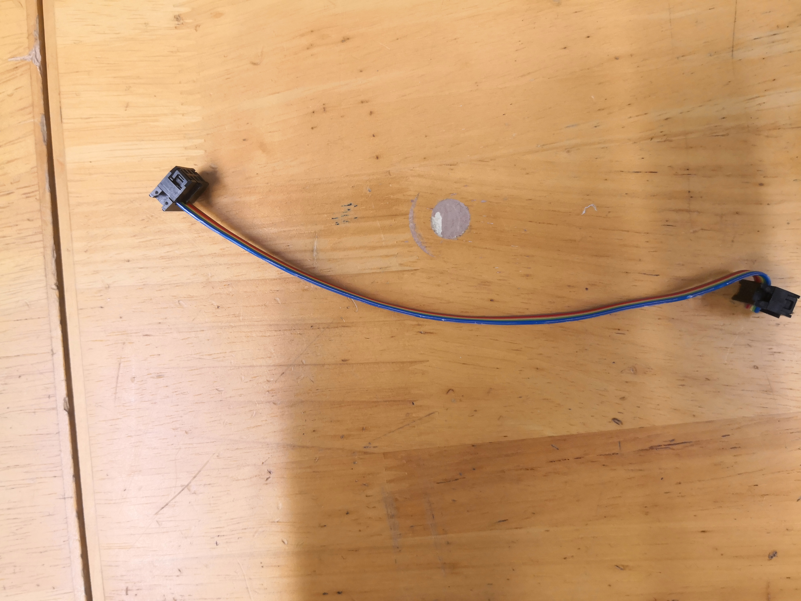

Electronics Production
In this section, I will show how printed circuit boards (PCBs) can be prototyped at the fablab. PCBs can be made by first milling the copper traces, then soldering the components on the board.
- ISP programmer:
- Toolpath generation
- PCB milling
- Populating the PCB
- Programming the ISP programmer
- Programming cable
- FTDI board manufacturing
FTDI Board:
Toolpath generation
Mods is opened. The menu can be opened by right clicking
Under programs, there are server programs.
PCB milling toolpath generation is under server programs, mill 2D PCB PNG/SVG.
The PNG file can be loaded with this module. The DPI is read automatically.
Mill traces preset is selected.
This is the calculated toolpath.
Fot milling the outline, the mill outline preset is used the cut depth is changed to 0.4mm.
This is the resulting toolpath for the board cutout.
Download toolpath filesPCB milling
The PCB start with a copper coated phenolic paper board, called FR1.
This is the endmill used to mill the PCB, It is a 0.1mm 10deg engraving bit.
The toolpath is loaded into the CNC machine control software, the toolpath is shown.
The milling has started, the endmill has started cutting the copper, this is called isolation milling.
Copper is machined to leave the desired traces.
Dust created by the milling is vacuumed.
This is the endmill used for cuting out the board, it is a 0.8mm flat endmill. It has been cut shorter so that it will be more ridgid and have a smaller chance of breaking off.
The CNC has started cutting out the board cutout.
Cutting out the board outline creates a lot of dust.
The board cutout is done.
This is what the PCB looks like before it is removed from the CNC.
The burrs are removed.
Populating the PCB
A knife is used to scrape off the excess copper so that soldering would be easier.
This is the result with the dead copper removed.
The copper oxide formed on the copper is sanded off, being careful to not destroy any thin trace on the PCB.
The result is shiny copper traces that solder will better stick to.
Copper dust generated by sanding is removed with a copper brush to prenevt them form shorting out the traces.
The result is a PCB with tracks clearly separated.
The colour and polarity of the SMD LEDs can be determined with the diode test function of a multimeter.
The red LED is tested.
The polarity of the LED can also be determined by the markings on the back of the LED and the green arrow at the top of the LED contact.
Resistors are labelled with a code and diode polarity is barked with a line. ICs are marked at the top. Ceramic capacitors are usally not marked.
Solder is first place on one of the pads.
The component is held with tweezers at the pads and one pad is soldered.
The second pad is soldered.
The remaining components are soldered.
Low components are soldered first. The header pin is soldered last.
Too much flux was used. The solder used was a lead-free solder with a higher melting point that did not wet out the pad too well. The traces got burnt and peeled away from the PCB because the temperature was too high, and I soldered for too long. The PCB did not end up working.
This is the second attempt using 60/40 solder, a lot less flux and a temperature controlled soldering iron.
Programming the ISP programmer
After the GNU toolchains are downloaded and installed, command prompt is opened.
The directory with the build files is navigated to.
Drivers are installed for the ISP programmer.
The connection to the programmer is tested.
The directory is chosen.
And the flash is written to the programmer.
The flash programming is successful.
The fuses are burnt to the programmer.
The burnt fuse values are the values defined in the build file.
The connection to the USBtiny programmer is checked in device manager.
The reset pin is disabled.
Reset is disabled successfully and the new fuse value is written.
Programming cable
A ribbon cable and two insulation displacing connectors (IDC) connectors are needed.
The 10 way ribbon cable is cut so that it is a 6 way ribbon cable.
The ribbon cable is inserted into the IDC connector.
The IDC connector is clamped onto the cable using a vice.
The connectors are attached at both ends.
The strain relief is clipped on.
FTDI board
The FTDI board is used to as a UART to USB adaptor and can also program UPDI microcontrollers.
Toolpath generation
This is Mods. The toolpath will be generated using this utility.
Right click opens up a menu. Programs is selected.
Open server program is selected.
Mill 2D PCB PNG is selected.
This is the opened program.
This module loaded the PNG files.
The traces file is loaded.
The default profile is selected for traces.
This is the generated toolpath.
The PNG file for the cutout is loaded.
The default for mill outline is selected. The cut depth is increased to 0.4mm.
This is the toolpath for the board cutout.
Download toolpath filesBoard milling
The toolpath is loaded in the CNC control software.

The traces are being milled on the CNC.
The board outline being cut.

The board outline is cut after the traces.
This is the milled serial to UPDI adaptor for UPDI microcontrollers.
This is the soldered and completed FTDI programmer with the UPDI adaptor.